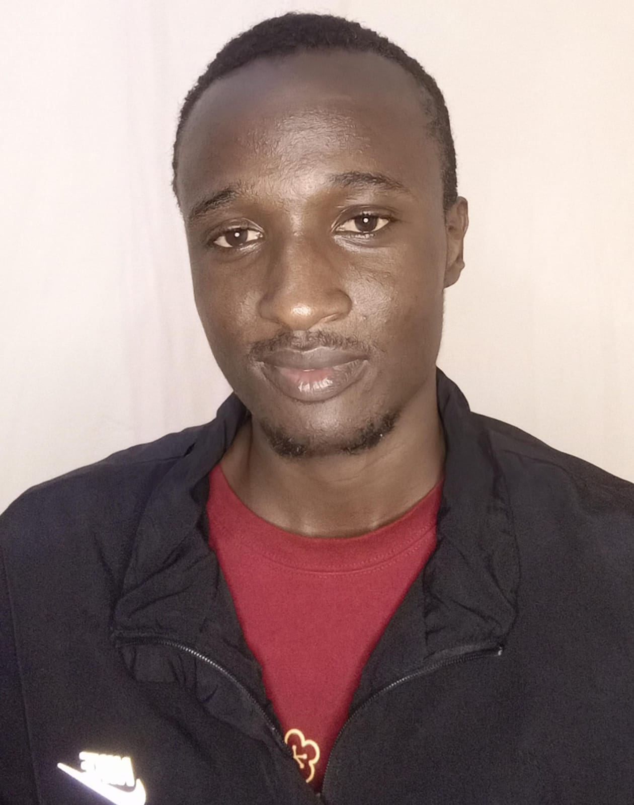

Computer Science student at Maseno University — building in software development, cybersecurity, and AI/ML.
I'm a CS student at Maseno University with a passion for building things that matter — from secure systems to intelligent applications.
My interests span software development, web security, and AI/ML engineering. I'm currently working through a structured cybersecurity learning path and building real-world projects alongside my coursework.
I enjoy the intersection of low-level systems and high-level problem solving — whether that's configuring network infrastructure or training a machine learning model.
Implemented RSA key generation, encryption, and decryption in Python without any cryptography libraries — including prime generation, modular exponentiation, and key derivation.
Full-stack customer management dashboard with dynamic sidebar navigation, session handling, and a MySQL backend. Built for a real client use-case with clean UX patterns.
Python implementations of symmetric encryption modes from scratch, demonstrating the weaknesses of ECB and the security improvements of CBC and CFB with custom padding.
Configured and troubleshot a real network: Ruckus R510 AP setup, DHCP configuration, subnet planning, and VLAN segmentation on a live environment.
Web-based supply chain management system with role-based access (Admin, Staff, Customer), real-time shipment tracking, order & inventory management, and an admin dashboard with live charts. Features CSRF protection, rate limiting, and social login UI.
Machine Learning project for predicting loan approval status using customer demographic and financial data. The dataset was cleaned, categorical features encoded, and numerical features standardized. Logistic Regression and Decision Tree classifiers were trained and compared to evaluate model performance.
Coursework in Machine Learning, Database Administration, Networking, Computer Graphics, HCI, Mobile Computing, and Cryptography.
Worked on AI training datasets — data labeling, quality review, and annotation tasks for NLP and AI/ML workflows.
Structured roadmap covering Linux, Bash scripting, networking fundamentals, web security (Burp Suite, SQLi, XSS, authentication attacks), and active directory enumeration.
I'm actively looking for internship and entry-level opportunities in software engineering, cybersecurity, or AI/ML. My inbox is open.
Say hello ↗